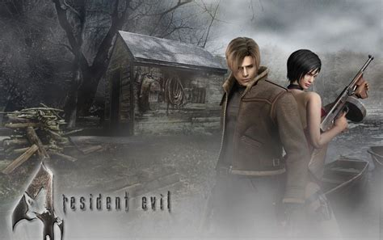

Rappel!
Le retrogaming, parfois francisé en rétrogaming, ou rétrojeu vidéo1, est l'activité qui consiste à jouer à des jeux vidéo anciens ou à les collectionner. Il concerne les jeux sortis sur les consoles de jeu, les micro-ordinateurs, les bornes d'arcades ou les jeux dits « électroniques ».
Rappel!
Un jeu vidéo indépendant est un jeu vidéo créé généralement par des individus ou des équipes de développement relativement petites et sans le soutien financier d'un grand éditeur de jeux vidéo.
Rappel!
Une creepypasta est une légende urbaine effrayante diffusée sur Internet, pouvant se décliner sous plusieurs formats (image, vidéo, fichier son, texte accompagné d'images, de vidéos, de sons,